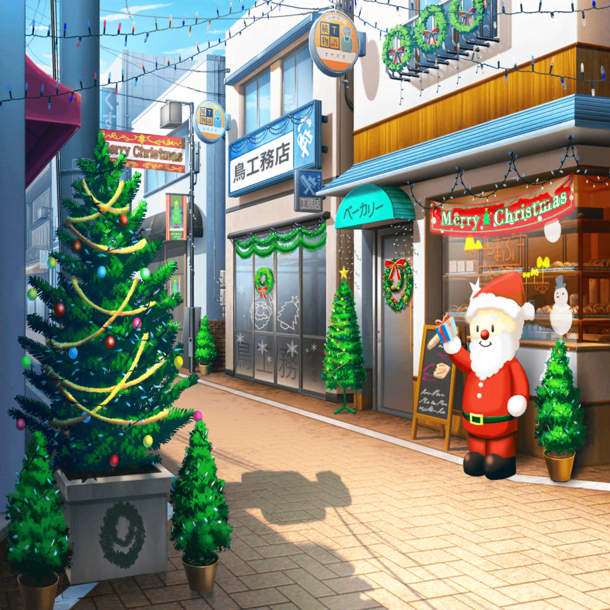

商店街
香澄
う～～～ん！
今日の練習も、充実だったね～っ！
香澄
わわっ！ 見てみて～！
商店街がクリスマス一色だよ～♪
りみ
わぁ～ホントだ、すごいねー。
昨日までは、いつもの商店街だったのに！
沙綾
こんな感じで飾り付けされてるのを見ると、
いよいよクリスマスが近づいてきた、って実感しちゃうね
たえ
あとはフライドチキンの匂いがしてたら完璧だね
有咲
おたえは、食うことばっかだな
沙綾
そういえば、うちのお店も
明日、クリスマスの飾り付けするって言ってたな
香澄
わわっ！ 楽しそー！
クリスマスツリーとかも飾るんだよね！？
沙綾
もっちろん
香澄
ねぇっ！
それ、私も手伝いたーいっ！
沙綾
ホントに！？
今、クリスマスに向けてすっごく忙しいから、
お父さんに言ったら喜ぶかも！
有咲
つーか、商店街でお店やるのって大変だな～？
うちは、特にクリスマスとか関係ないから、気楽なもんだぞ
香澄
え？
流星堂は、クリスマスの飾り付けとかしないの？
有咲
そんな派手なことはしないなー。
そもそも質屋とクリスマスって、全然関係ねーし
有咲
まー、やったとしても、
せいぜいばーちゃんがサンタの帽子被るくらいじゃん？
りみ
……え？
有咲ちゃんのおばーちゃんが、サンタの格好するの？
有咲
いやいや！ 格好はしねーから！
仮にやったとしたらって話なだけで……
たえ
え？
有咲がサンタの格好をするの？
有咲
ちゃんと話を聞け！
なんでそんな話になってるんだよっ！？
香澄
そっかー、残念だな～。
もし有咲がサンタの格好してたら、うちのパーティを中断して
絶対にあっちゃんと見に行ったんだけどなー
沙綾
私も！
お店の手伝い抜け出して、絶対見に行っちゃうのに！
有咲
……つーか、え？
クリスマス……香澄は、家でパーティなんだ……？
香澄
うん！ そうだよっ！
戸山家恒例のクリスマスパーティ！
毎年あっちゃんと、プレゼントの交換してるんだっ！
有咲
へ、へぇぇ～……そっかぁ、なるほどねぇ……
……で、沙綾は、クリスマス……お店の手伝い、と
沙綾
うん。
クリスマスってケーキ屋さんが忙しいイメージあるけど、
パン屋も意外と忙しいんだよ
沙綾
クリスマスパーティ用にバゲットがすごく売れるの。
もう、朝から大忙しって感じ
りみ
確かに、沙綾ちゃんちのバゲット美味しいもんね～。
外はパリパリで、中はモッチリしてて
りみ
あ、私も家のクリスマスパーティ用に、予約しておこうかな。
サンドイッチにすると最高だもん！
たえ
私はスモークサーモンのサンドイッチが好き。
あの風味がたまらないよね！
有咲
何、急に熱く語ってるんだよ！
誰もそんな話してねーだろ！
有咲
……っていうか、りみも自分んちでパーティなんだ？
りみ
うん、一応そういうことになってるよ！
有咲
へぇぇ、そ、そうなんだ……
……ちなみにおたえは？
たえ
うちはやらないよ。
ちょっとだけごちそうが出て、軽くケーキを食べるくらい
有咲
……うん。
それはもう、完全にクリスマスパーティだな
有咲
……うん、そっかぁ。
なるほどなぁ……はぁぁ～
香澄
ん？ どうしたの、有咲？
なんか様子が変じゃない？
有咲
いやぁ～、別に、大したことじゃないんだけど……
有咲
……クリスマスパーティ？
ひょっとしてみんなでやるのかな～、とかちょっと思ってたから
香澄
……え？
……ひょっとして、有咲。
それはみんなでクリスマスパーティがしたい、って意味！？
有咲
そ、そういうんじゃねーから！
香澄
いや、今の発言は絶対そうだよ！
さーやもそう思うよね！？
沙綾
うん……
有咲、完全にデレてたよ
有咲
ち、ちげーって！ デレてねーって！
つーか、みんな忙しいなら別にいーし！
うちは、ばーちゃんとやるから！
香澄
わかったっ！
有咲がそこまで言うなら、みんなでクリスマスパーティやろう！
ねっ！？ いいよね、みんな！？
有咲
だからっ！ 言ってねーからっ！
りみ
うん！
有咲ちゃんから言ってくれるなんて嬉しいもん！
絶対、みんなでやろうよ！
有咲
誤解だって！
沙綾
私も、お店が忙しいけど、なんとか時間を作ってみるね！
たえ
あ！ ちょっと待って。
今、大事なこと気づいた
香澄
……え？ ど、どうしたのおたえ？
なんか問題あった？
たえ
七面鳥とローストビーフは誰が用意するの？
有咲
クリパモード全開か！？
香澄
……あ、そうだ！
せっかくなら、パーティだけじゃなくって、ライブもやろうよ！
有咲
ら、ライブっ！？
香澄
どうかな！？
クリスマスライブ！ やってみたいよね！？
有咲
ほぉ……なるほどな。
それも悪くないんじゃん？
沙綾
ふふふ……
いつもの有咲なら、絶対『はぁっ！ 急すぎるだろ！？』って
言ってたはずだけど、今日はなんか素直だね？
有咲
う、うるせーな！
香澄
よし！ それじゃあ、みんなオッケーだよね！？
この１年を締めくくるPoppin'Partyのクリスマスライブ！
みんなで頑張ろーっ！